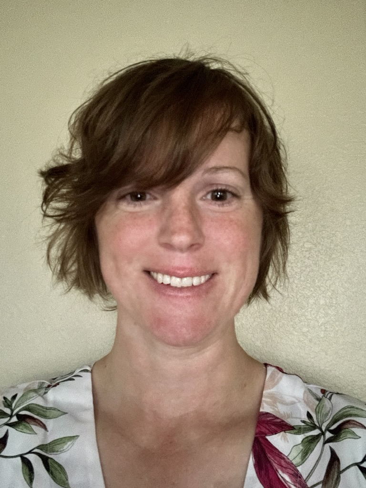

Sandi Jo Junker | WDD 130
My name is Sandi, and I currently live in Alabama.
I am a mother of three, and I'm studying software development.
I enjoy fishing, cooking, running, gardening, and many other hobbies. Some of my favorite foods include ice
cream, cheesy garlic bread sticks, poke bowls, and sweet chili doritos. I've served in the military as a
intelligence analyst.
Currently, I am growing a winter garden with cabbages, radishes, broccoli,
peas, lettuce, spinach, and other cold-tolernat vegetables. Unfortuantely, I don't have the greenest thumb.
The peas are growing great, but my radishes aren't developing any roots. My spinach, lettuce, and beets are
still tiny after over a month of growing. And, my broccoli, kale, and cabbage never came up. Once the
weather gets warmer, I look forward to trying to grow tomatos, peppers, onions, pumpkins, and many other
delicious plants. Hopefully, my thumb will get greener as time goes on.